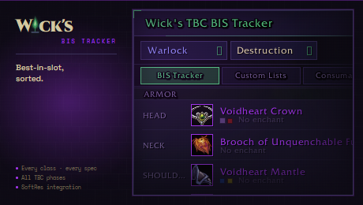
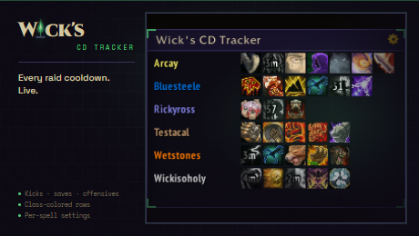
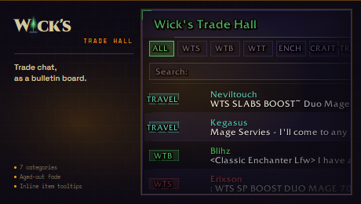
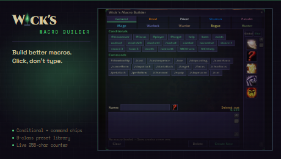
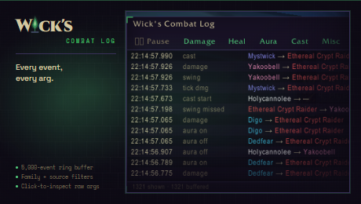

Every Wick addon is built around the same locked five-color palette and the same fel-green L-bracket chrome. No gradients, no Blizzard dialog textures, no fantasy scroll borders. Just clean information density that fades into the background until you need it.
Open source under MIT — brand assets trademarked. See the WickSuite repo for the full identity system.
Pick the addons you need from the suite. Each is fully self-contained — no shared dependencies, no library spaghetti. Built solo, by Wick.
↑ Back to the suite